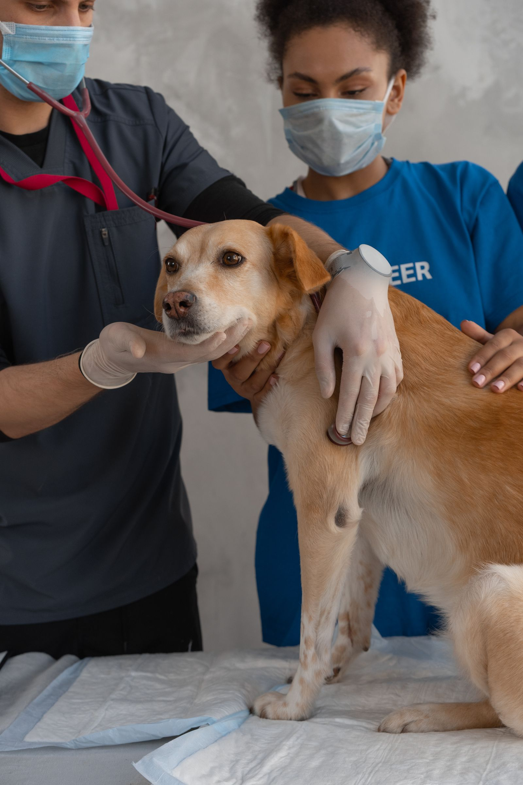

New patients
Your first visit, made simple
First visits take a little extra time. The vet will want to meet your pet, hear your questions, and go through any history you can share. Here is what helps.
- Call ahead. Ring (251) 943-7507 so the team can set aside time for your visit and tell you anything specific to bring.
- Bring any records you have. Past vaccination records or notes from a previous vet give the team a head start on your pet's care.
- Keep dogs leashed and cats in carriers. It keeps every patient in the waiting area safe and calm.
- Write down your questions. Diet, behavior, anything you have noticed at home. It is easier than trying to remember in the exam room.
- Plan for a few extra minutes. The first appointment includes an introduction and a full exam, so it runs a bit longer than a return visit.
"Providing a Homelike Environment for the Comfort of our Patients and Clients." That starts with the first phone call.

New to Foley, or just new to the clinic? The team treats cats, dogs, and small animals, and they are glad to answer questions before you ever set foot in the door.